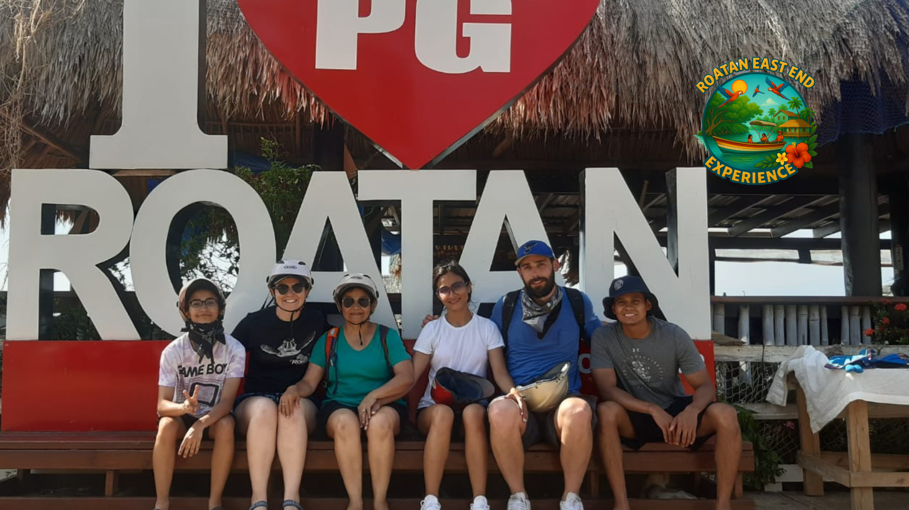
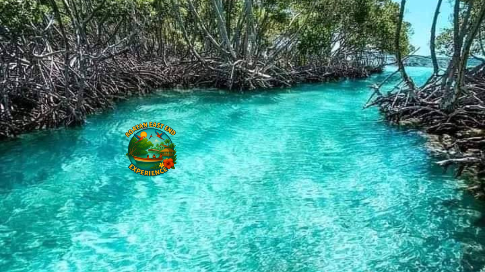

El Corazón de los Manglares
Descubre la magia de nuestros manglares, un ecosistema único que alberga innumerables especies.

Conexión con la Naturaleza
Cada tour es una oportunidad para conectar con la esencia pura de Roatán.

Atardeceres Mágicos
Momentos únicos que pintan el cielo con colores inolvidables.

Aventuras en Kayak
Explora los misteriosos canales de los manglares de una manera única y emocionante.

Biodiversidad Marina
Sumérgete en un mundo lleno de vida y color bajo nuestras aguas cristalinas.

Experiencia Auténtica
Vive Roatán como un local, descubre sus secretos mejor guardados.